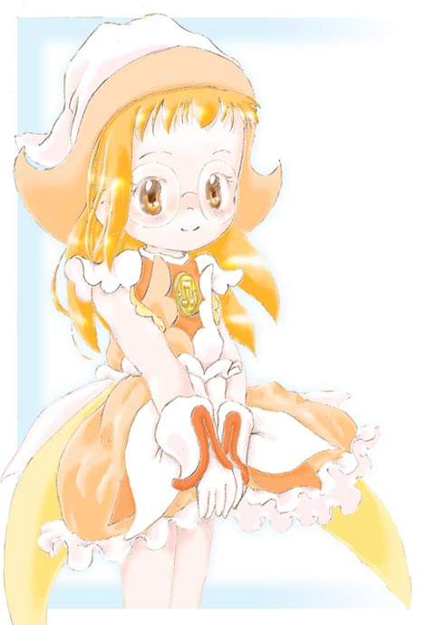
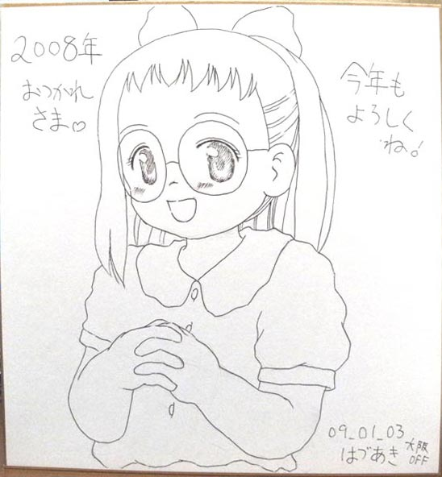
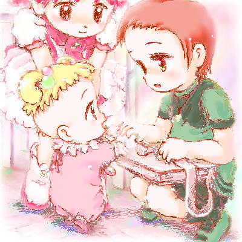
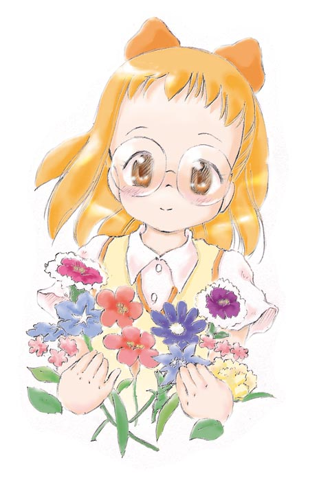
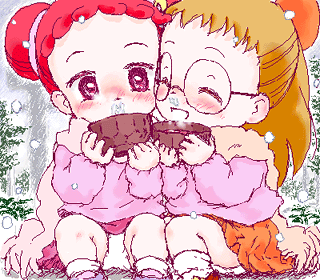

新年初更新は、絵チャ絵のおめかし幼はづきさんで～ｖ
新年あけましておめでとうございます！（おそいﾖ；
いやー更新１ヶ月以上ぶりとなりました；
ここ最近は「くるみるく」さんの大犬犬太さんと
らき☆すたみさお本の原稿など進めて楽しい日々ですｖ
そんなわけで高校生を練習してるので
幼絵で中和という感じで、いそぎですが描いてみましたｖ
大阪オフ、コミケ遠征について、その他もろもろ年末年始の言い訳は日記の方で！
今年は去年よりさらに大変な年になりそうですが、
みなさんにとって！私にもとって！(笑)いい年になりますようにっ！
（更新日 10年1月19日TUE.）

大阪オフ(詳細は同日日記にて)飲み屋で描いたマジカルキャラクターブックの
初見、描き下ろし？のイラストがどの子もめっちゃ可愛かったので
代表してはづきさんをほぼ模写でｖ
うーん、マジキャラブック欲しいけど、個人取引はこわいﾅｧ…と
まぁ毎回オフで誰かがもってきてくれるだろうからそのとき拝めばいいかな
消しゴムをかけるとかすれる絵葉書だったので線がかすれかすれー
でもまぁオフ会の思い出ですｖ
09年8月に描いた絵
（更新日 09年8月13日THU.）

一枚TOP向け季節絵のラフが出来たのですが、まだそっちに手がまわらない
＆描けるまでいつまでも冬絵じゃ可哀想ということで
05年度自己紹介コピー本表紙のパトレーヌはづきっちｖ
大きな絵左寄せもたまにはいいかな、とｖ
…今度のぷにケにはサークル参加しようと思っております～
ハナちゃんのごにょごにょな本をたずさえて！
データ残ってるのでこの本も少し再販しようと思います(内容ラフですが；
ぷにケ向けの原稿なのでUPはしませんが
最近お絵かきが結構はかどってます。
このペースでいけば無理なくぷにケに本が出せるかな、と。
今年度から行き始めた学校の勉強もだんだん面白くなってきたし、
油断せずがんばっていきたいと思いますｖ
05年12月に描いた絵
（更新日 09年6月2日TUE.）
5/5どれみイベント美空小同窓会、「こんじゃぱ×だんじとうじきょう」さんで
11部販売した突発本(18禁ｗ)の本文最後のページを担当させてもらった、
大ハナちゃんの少し未来の憧憬１ページ漫画。クリックで展開。
本文１ページ目とのギャップがすごいと評判ですｖ
買っていただいた方！ありがとうございましたー！
あと宣伝ｖ 5/31ぷにケット19、マオ26「土曜ど祭り同盟」にて販売される(予定)の
どどど本リターンズにて１P寄稿させてもらってますｖ
描き下ろし見習い服ハナちゃん中心のページを頑張りました。
いらっしゃる方は是非お立ち寄りをｖ
う～んマイブームイズハナちゃんっちｖ
09年5月に描いた絵
（更新日 09年5月7日THU.）

さて、ネリヒバリさんから色紙のデジカメ撮影がとどいたのでUP！
…某絵チャットでははづあきと名乗ってるえむけいです。
ホント、０８年はいろいろな事がありました～。今年もよろしくですｖ
09年01月に描いた絵
（更新日 09年1月12日MON.）

更新半年以上空いてしまったので、未完成ながら
割と本気で描けたものを一枚ｖ
合宿ドレミファン！にて、ひさみねさんのスケブに描いた
おぱんちゅちらさやかたんｖ
みなさんがお絵描きなどしてる風景を１枚、それから
練習としてさやかたん研究として１枚描いてから
描きましたｖ
研究絵で、頭身としては一番右のが
いいかな？と思ったんですがかなっぺさんに
一番左のふわふわ感？がイイ！と言われて
じゃあその複合で、という感じで描きましたｖ
宛てた相手のひさみねさんはもとより
かなっぺさんにも評判が良く、描いて良かったー！ｖ
出来れば後に清書して色も付けて
ここの更新＆pixivに投稿出来ればナァと思っております。
がんばれ、私！(笑)
08年9月に描いた絵
（更新日 08年9月9日TUE.）

今の気持ちが続いている内に、誕生日(2月14日)へ先がけて
も～っと！時(01年度)の誕生日はづき絵
２日遅れて年中無休！さん(←今は閉鎖)にアップさせて貰って
たくさんコメント貰って、この時は自分も嬉しい気持ちでいっぱいで…
話は逸れますがポト子祭り、覚えてる方いらっしゃるでしょうか…？
同管理人さんサイト、同掲示板で前述のとほぼ同じ時期に
１枚の擬人化絵(カスミンのポトポット)から広がった
いろんな思いがあふれていたあのお祭り
その絵を描いた人とも交流を持ててとてもしあわせでした。
思えば私はあの時が一番しあわせだったのかもしれません
もし今週この気持ちが持続出来たら
とある絵チャットで描かせて貰ったのをラフにして
18歳(？)おめでとう絵を描こうと思います。
もし、です。
02年2月に描いた絵
（更新日 08年2月10日SUN.）

オリおジャがくふたんｖ
あいちゃんWEBさん(←現在閉鎖)のお絵描き掲示板でその昔
一時期流行ったオリジナルのおジャ魔女です。
発案者さんは由良利＃さん(今はサイトを閉じてるようで)
こんな素晴らしい子をデザインして下さってありがとう！
（って自分のキャラでもなしに…^^;）
たしか“恋の劇薬”とか設定が付いて、みなさん
そんな絵を描かれていたように思います。
この子を使ったオリジナルのお話を描いてみたい、
と思っています。三次創作？で「おジャ魔女がくふ」もしくは
「空色の魔女見習い」。
自分の幼少の思いなどを胸に、泣いたり笑ったり
元気一杯に、でも内面は裏黒く切なくドロドロしていて…(汗
以前の更新で言った作品達を完成できたらこのお話にとりかかりたいと思っています。
おそらく超ローペースになると思いますがどうか応援してくださいｖ
00年9月に描いた絵
（更新日 07年10月5日FRI.）

ものすごくぶりにじぶんらしさ全開な絵を描けた。
おジャ魔女がくふたん。元がいいから可愛い？(自分で言うな；
自分はどうやら、硬め(HB)のシャーペン(0.3)でひととおり描いた後
同じ硬さのシャーペン＆消しゴムで修整しながら筆圧強めで塗り足していくように
線を引く、という描き方が昔からの基本みたい。
一時期は筆圧が強くなりすぎて描いても描いても辛い、指痛い、となってしまった事も
（Dear^2 HAZUKI.2 plot1というコピー誌を描いていた頃はその極地で
ガリガリ描きすぎるせいで頭身が低くなってるのが自分でも分からず
すごく苦悩してました）
今度本を作るときは下絵を配置中心に修整しながら描いていって
上の描き方でシャーペントレス、パソにスキャンして入れて一番濃い部分が
黒になるようにそして濃淡が生きるようにトーンカーブ調節、
基本350dpiでトーンを最終的に入れるときは600dpiの15線～70線ﾊｰﾌﾄｰﾝｽｸﾘｰﾝ化して
画像合成、とやるのが良さそう。というかやってみよう。
07年10月に描いた絵
（更新日 07年10月5日FRI.）

RMC姫ちゃんのリボン(全10巻)を
読み返してみて
その表現の自由さ(絵画的な意味で)に
感銘を受けて
ちょっと漫画っぽい構図で一枚…ｖ
知人に、1p漫画を描いてみるといい、
と言われていたので
セリフはあらねど、それっぽくなったかな…？
というカンジで。
（後に清書(ｸﾘﾝﾅｯﾌﾟ、効果入れ)予定）
07年6月に描いた絵
（更新日 07年6月29日FRI.）

も～っと！どれみ(３年目)20話「はじめて会うクラスメイト」
同38話「学校へ行きたい！」
同45話「みんなで！メリークリスマス」
見返しました。序盤のかよちゃんの一言一言の反応
ぐさりとささる記憶甦るシーン
最後はご都合主義で見てられない、という方も
その感じ方もとても愛おしいです
おジャ魔女どれみは見るとちょっとだけ優しくなれる
そんな気のするアニメです。
DVDレンタルはどこもまだやってると思うので(多分)
ちょっと手に取ってあらすじを見て
これは、と思うものを見てみて欲しいです。
ten-iso'n tokoさんでの当時の感想書き込み
てんいそさんと連絡がつける手段が無いので
無断掲載させてもらいます。
(不都合があればページ一番下のメールから言って下さい)
02年1月に描いた絵
（更新日 07年5月2日WED.）

今日は大阪のあいちゃんの都合もついて４人でお出かけ…♪
ももちゃんは特に(アメリカのため)、おんぷちゃんらが来られない日でも気兼ねなく会えるくらい
みんなが集まれる機会がよくある今だと良いなぁとか
ぽっぷちゃんはいつまでもみんなの妹でいてほしいです
色付け中～２～３～４～
（初回更新日 05年9月27日TUE.）

は づ き さ ん の こ と
習い事に疲れちゃったりしたり
自分で何か決めるって出来なかったり
うつむいてしまう気持ちの時も
ぽっぷちゃん、どれみちゃん、あいちゃん
おんぷちゃん
誰かが側にいてくれて
だから一人になっても頑張れるようになって
だんだん表舞台(本編)では目立たない子に
なっていったけど、ずっと愛おしい子
05年9月に描いた絵
（更新日 05年9月20日TUE.）


矢田君との心にすき間が出来てた４年間
（１年生2/14～５年生2/14）
いつもどれみちゃんが側にいたり
魔女見習いになってみんなとさわいでいたり
一緒にいてしあわせそうで
それに救われていた気がします
05年9月に描いた絵
（更新日 05年9月6日TUE.）

今だに出したいと思ってる同人誌その２
Dear2 HAZUKI(しりーず)
無印時代のあぶなっかしい性質(精神的に)だったはづきちゃんに
さわっちゃいたくて愛おしくて、そんな思いを稚拙な漫画ながら
描き綴ろうとしていたんですがなかなかどうして…
ドッカ～ン完結、ナイショで、ママとのこと矢田君とのこと
これまでのはづきちゃんの思いは一通り語られた訳ですが、
その上でも尻切れトンボな自分の作品を完結させておきたいです。
魔女見習いの秘密を知ったひとりの青年
はづきちゃんに近づいて、驚かせたり、不安にさせたり
はづきちゃんを笑わせたかったり、一緒でいたかったりとか、悩ませたりとか
まだ幼いはづきちゃんに青年の性衝動がからむお話
05年9月に描いた絵
（更新日 05年9月3日SAT.）
今でも出したい（と思ってる）同人誌その１
無印おんぷちゃん本
小悪魔だった頃に心を操る魔法を使って・・・？
画像はあんまり関係なくて
熱っぽいの表に出さないように我慢してるおんぷ
さりげに気付いてくれて感情が揺すられてる絵
イベントのサークルカット向けに描いたけど
お蔵入りしていたものです～


{kind=link}
{kind=link}
{kind=link}

{kind=link}

パソをネットに繋いではじめて描いた
お絵描き掲示板絵。
２時間経たないうちにお返事をくれた、
私のことを知っててくれたひと…
この出来事が私にはとてもうれしかったの
（更新日 03年11月6日THU.）
元サイズ絵 2000年9月の絵(…たしか＾＾；)
{kind=link}